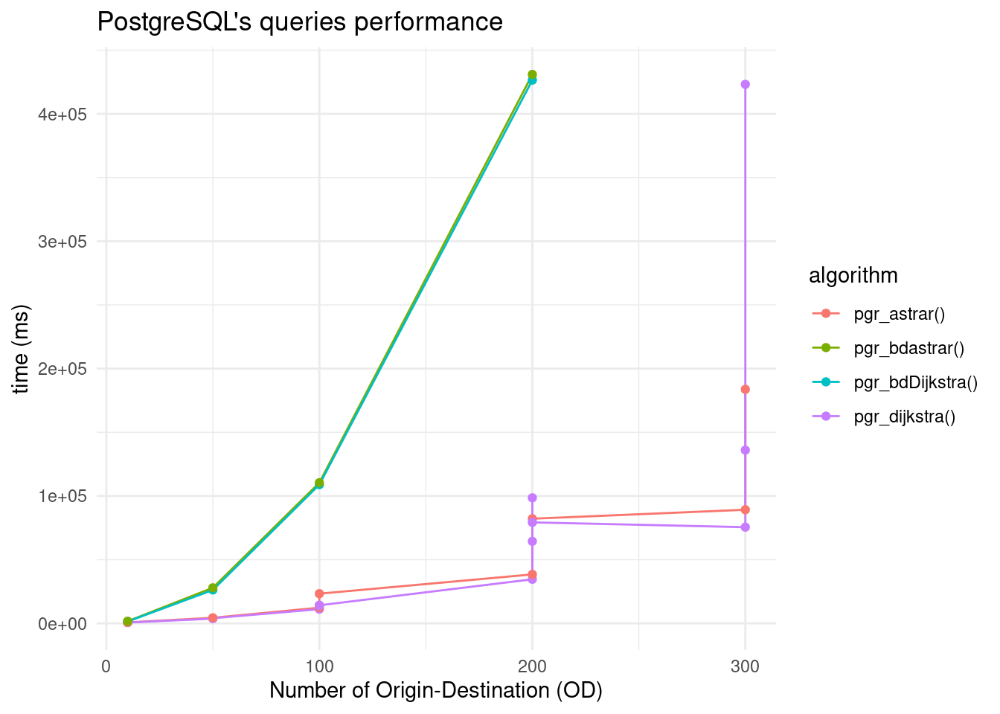

Show the code
lapply(c("readODS","tidyverse","ggplot2","DT"), require, character.only =TRUE)Loading required package: readODSLoading required package: tidyverse── Attaching core tidyverse packages ──────────────────────── tidyverse 2.0.0 ──
✔ dplyr 1.1.4 ✔ readr 2.1.5
✔ forcats 1.0.0 ✔ stringr 1.5.1
✔ ggplot2 3.5.1 ✔ tibble 3.2.1
✔ lubridate 1.9.3 ✔ tidyr 1.3.1
✔ purrr 1.0.2
── Conflicts ────────────────────────────────────────── tidyverse_conflicts() ──
✖ dplyr::filter() masks stats::filter()
✖ dplyr::lag() masks stats::lag()
ℹ Use the conflicted package (<http://conflicted.r-lib.org/>) to force all conflicts to become errors
Loading required package: DT[[1]]
[1] TRUE
[[2]]
[1] TRUE
[[3]]
[1] TRUE
[[4]]
[1] TRUEShow the code
performance <- readODS::read_ods("metrics.ods")
df <- performance |> dplyr::select(c("number_od","method","algorithm","time","max_centrality","count_rows","query","analyze")) |> filter(!is.na(time) & method=='naive')
ggplot(df,aes(x=number_od, y=time, group = algorithm)) +
labs(x="Number of Origin-Destination (OD)",
y="time (ms)",
title="PostgreSQL's queries performance") +
geom_line(aes(color=algorithm)) +
geom_point(aes(color=algorithm)) +
theme_minimal()
Show the code
DT::datatable(subset(df, select=c("number_od","algorithm","time","query","analyze")),
class='compact', rownames=FALSE, escape=FALSE, caption='Data description',
extensions=c("Buttons",'RowGroup'),
options=list(
order=list(list(0, 'asc'), list(2,'asc')), # Sort by the first column (index 0)
rowGroup=list(dataSrc=0), # Fixed rowGroup
dom="Bfrtip",
columnDefs = list(list(visible=FALSE, targets= c(3,4))),
buttons=c("copy", "csv", "pdf"),
initComplete = JS(
"function(settings, json) {",
"$(this.api().table().header()).css({'background-color': '#d50038', 'color': '#fff'});",
"}")
)
) |>
DT::formatStyle("time",
background=DT::styleColorBar(range(df$time), '#ee8b8b'),
backgroundSize='98% 88%',
backgroundRepeat='no-repeat',
backgroundPosition='center')